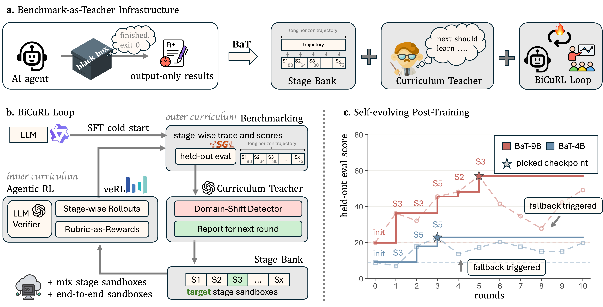
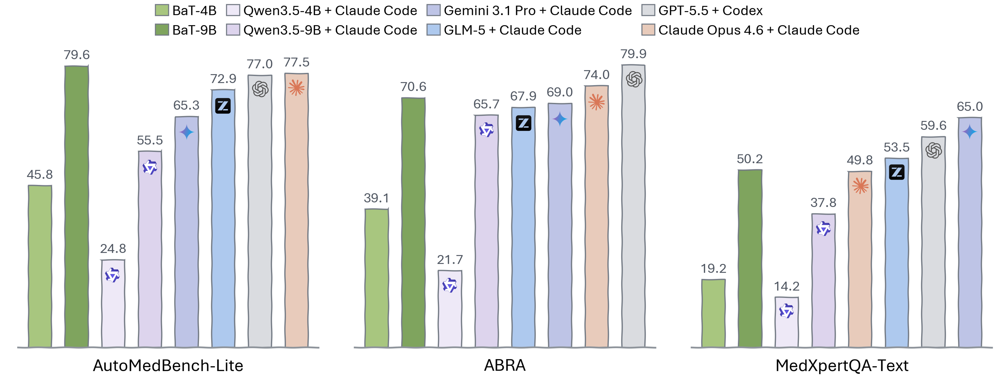
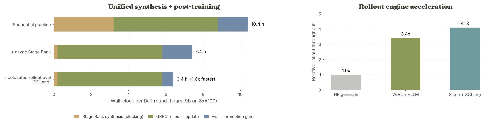

Turning a structured benchmark into self-evolving post-training infrastructure for long-horizon agents.
On AutoMedBench-Lite, BaT-9B Agent reaches 79.6 Overall — exceeding Claude Opus 4.6 + Claude Code (77.5).

An asynchronous pipeline that synthesizes held-out-safe training states — 6 focus x 7 tracks x 3 outcomes = 126 states — with strict content isolation from the evaluation set.
Bilevel Curriculum RL. The outer loop reads stage scores and picks the weakest stage; the inner loop practices it with GRPO on Stage Bank states, mixing target, rehearsal, and end-to-end pools in every batch.

BaT-4B and BaT-9B more than double the Overall scores of their Qwen Instruct baselines. The framework is model-agnostic — larger LLMs are the immediate next step.
BaT is training infrastructure, not a single recipe. Supported stacks: VeRL + vLLM and Slime + SGLang.
Stage Bank is not a preprocessing step — it runs as an asynchronous service beside the trainer. While round r trains on GPUs, the pipeline is already synthesizing round r+1 states on CPU / API workers. The only interface between the two is a signed round manifest:
manifest.json
source_sha256 # pins the held-out-safe source grid
target_stage # picked by the BiCuRL outer loop (e.g. S3)
leakage_checks # content-isolation report, must passSynthesis never blocks a GPU, and the evaluation firewall stays intact: training only ever sees manifest-approved states, never benchmark content.

Overlapping synthesis with training and colocating the eval gate on the rollout engine cuts wall-clock per BaT round from 10.4h to 6.4h (9B on 8xA100). The rollout engine itself is swappable — SGLang gives ~4x throughput over plain HF generation.
@article{liu2026bat,
title={BaT: Towards Self-Evolving Medical Research Agent
with Stage Rubrics},
author={Liu, Junqi and He, Yufan and He, Yexiao and Guo, Pengfei
and Yang, Dong and Myronenko, Andriy and Zhao, Can
and Ye, Hanrong and Qi, Tianhao and Zhou, Yuyin
and Xu, Daguang and Tang, Yucheng},
journal={arXiv preprint arXiv:2608.16211},
year={2026}
}